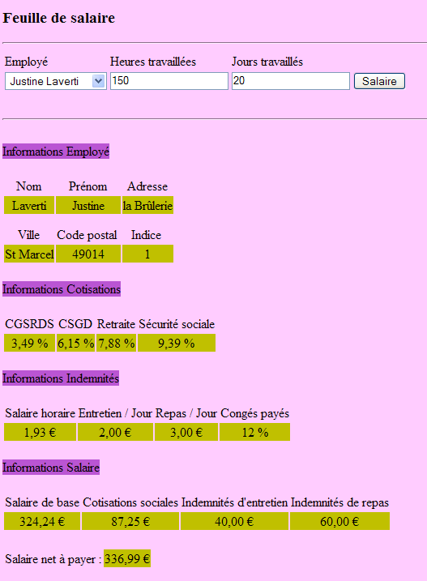

4. La aplicación [SimuPaie] – versión 1 – ASP.NET
4.1. Introducción
Queremos crear una aplicación .NET que permita al usuario simular los cálculos de nóminas para los cuidadores infantiles de la asociación «Maison de la petite enfance» de un municipio.
El formulario de cálculo de salarios de ASP.NET tendrá este aspecto:

La aplicación ASP.NET tendrá la siguiente arquitectura:
 |
- Cuando se realiza la primera solicitud a la aplicación, se crea una instancia de un objeto de tipo [Global] derivado del tipo [System.Web.HttpApplication]. Este objeto procesará el archivo de configuración [web.config] de la aplicación web y almacenará en caché ciertos datos de la base de datos (operación 0 anterior).
- Cuando se realiza la primera solicitud (operación 1) a la página [Default.aspx], que es la única página de la aplicación, se gestiona el evento [Load]. Aquí es donde se rellena el cuadro combinado de empleados. Los datos necesarios para el cuadro combinado se recuperan del objeto [Global], que los ha almacenado en caché. Esta es la operación 2 anterior. La operación 4 envía la página inicializada al usuario.
- Cuando se realiza la solicitud para calcular el salario (operación 1) a la página [Default.aspx], se procesa de nuevo el evento [Load]. No se hace nada porque se trata de una solicitud POST, y el controlador [Pam_Load] se escribió para no hacer nada en este caso (utilizando el booleano IsPostBack). Una vez gestionado el evento [Load], se gestiona a continuación el evento [Click] del botón [Salary]. Este evento requiere datos que no se han almacenado en caché en [Global]. Por lo tanto, el controlador de eventos los recupera de la base de datos. Esta es la operación 3 anterior. A continuación, se calcula el salario y la operación 4 envía los resultados al usuario.
4.2. Visual Web Developer 2008
 |
- En [1], cree un nuevo proyecto
- en [2], de tipo [Web / Aplicación web ASP.NET]
- En [3], asigne un nombre al proyecto
- en [4], especifique su nombre y en [5] su ubicación. Se creará una carpeta [c:\temp\pam-aspnet\pam-v1-adonet] para el proyecto.
 |
- En [5], el proyecto de Visual Web Developer
- En [6], las propiedades del proyecto (clic con el botón derecho del ratón sobre el proyecto / Propiedades / Aplicación).
- en [7], el nombre del ensamblado que se generará al compilar el proyecto
- en [8], el espacio de nombres predeterminado que queremos utilizar para las clases del proyecto. La clase [_Default] definida en los archivos [Default.aspx.cs] y [Default.aspx.designer.cs] se creó en el espacio de nombres [pam_v1_adonet], derivado del nombre del proyecto. Puedes cambiar este espacio de nombres directamente en el código de estos dos archivos:
[Default.aspx.cs]
using System;
....
namespace pam_v1
{
public partial class _Default : System.Web.UI.Page
{
[Default.aspx.designer.cs]
//------------------------------------------------------------------------------
// <auto-generated>
// This code was generated by a tool.
// Runtime version :2.0.50727.3603
//
// Changes made to this file may result in incorrect behavior and will be lost if
// the code is regenerated.
// </auto-generated>
//------------------------------------------------------------------------------
namespace pam_v1 {
public partial class _Default {
.........
También hay que modificar el marcado del archivo [Default.aspx]:
 |
<%@ Page Language="C#" AutoEventWireup="true" CodeBehind="Default.aspx.cs" Inherits="pam_v1._Default" %>
...
El atributo Inherits anterior hace referencia a la clase definida en los archivos [Default.aspx.cs] y [Default.aspx.designer.cs]. En ellos se utiliza el espacio de nombres pam_v1.
4.2.1. El formulario [ Default.aspx]
El aspecto visual del formulario [ Default.aspx] es el siguiente:
 |
Los componentes son los siguientes:
N.º | Tipo | Nombre | Función |
Lista desplegable | Combinado de empleados | Contiene la lista de nombres de empleados | |
Cuadro de texto | Cuadro de texto Horas | Número de horas trabajadas: número real | |
Cuadro de texto | TextBoxDays | Número de días trabajados – entero | |
Botón | BotónSalario | Calcular salario | |
Cuadro de texto | Cuadro de texto de error | Mensaje informativo para el usuario ReadOnly=true, TextMode=MultiLine | |
Etiqueta | LabelName | Nombre del empleado seleccionado en (1) | |
Etiqueta | EtiquetaNombre | Nombre del empleado seleccionado en (1) | |
Etiqueta | EtiquetaDirección | Dirección | |
Etiqueta | EtiquetaCiudad | Ciudad | |
Etiqueta | Código postal | Código postal | |
Etiqueta | Índice de etiquetas | Índice | |
Etiqueta | EtiquetaCSGRDS | Tasa de contribución CSGRDS | |
Etiqueta | Etiqueta CSGD | Tasa de contribución CSGD | |
Etiqueta | Etiqueta de jubilación | Tasa de contribución para la jubilación | |
Etiqueta | EtiquetaSS | Tasa de cotización a la Seguridad Social | |
Etiqueta | EtiquetaSH | Salario base por hora para el índice indicado en (11) | |
Etiqueta | EtiquetaEJ | Subsidio de manutención diario para el índice indicado en (11) | |
Etiqueta | EtiquetaRJ | Subsidio diario para comidas correspondiente al índice indicado en (11) | |
Etiqueta | EtiquetaVacaciones | Porcentaje de la asignación por vacaciones pagadas que se aplicará al salario base | |
Etiqueta | EtiquetaSB | Importe del salario base | |
Etiqueta | EtiquetaCS | Importe de las cotizaciones a la Seguridad Social a pagar | |
Etiqueta | EtiquetaIE | Importe de la prestación por hijos a cargo | |
Etiqueta | EtiquetaIR | Importe de las ayudas para comidas del niño en acogida | |
Etiqueta | EtiquetaSN | Salario neto a pagar al empleado |
El formulario también contiene dos contenedores [Panel]:
contiene el componente TextBoxError (5) | |
contiene los componentes del (6) al (24) |
Un componente [Panel] se puede mostrar u ocultar mediante programación utilizando su propiedad booleana [Panel].Visible.
4.2.2. Validación de entradas
Para calcular un salario, el usuario:
- selecciona un empleado en [1]
- introduce el número de horas trabajadas en [2]. Este número puede ser decimal, como 2,5 para 2 horas y 30 minutos.
- introduce el número de días trabajados en [3]. Este número es un entero.
- calcula el salario utilizando el botón [4]
 |
Cuando el usuario introduce datos incorrectos en [2] y [3], estos se validan en cuanto el usuario cambia de campo de entrada. Por lo tanto, la captura de pantalla que se muestra a continuación se tomó incluso antes de que el usuario hiciera clic en el botón [Salario]:
 |
Para que se produzca el comportamiento descrito anteriormente, se requieren dos condiciones:
- los componentes de validación deben tener la propiedad EnableClientScript establecida en true:
 |
- El navegador que muestra la página debe poder ejecutar el código JavaScript incrustado en una página HTML.
Si el navegador del cliente no verifica la validez de los datos por sí mismo, estos solo se verificarán cuando el navegador envíe los datos del formulario al servidor. Será entonces el código del servidor que procesa la solicitud del navegador el que verifique la validez de los datos. Tenga en cuenta que esta validación debe realizarse siempre, incluso si la página mostrada en el navegador del cliente contiene código JavaScript que realiza la misma validación. Esto se debe a que el servidor no puede estar seguro de que la solicitud POST que recibe provenga realmente de esa página y de que, por lo tanto, los datos hayan sido validados.
La lista de validadores es la siguiente:
N.º | Tipo | Nombre | Función |
Validador de campos obligatorios | Validador de campo obligatorio Horas | comprueba que el campo [2] [TextBoxHeures] no esté vacío | |
Validador de rango | RangeValidatorHours | comprueba que el campo [2] [TextBoxHours] sea un número real comprendido entre [0, 200] | |
Validador de campo obligatorio | RequiredFieldValidatorDays | comprueba que el campo [3] [TextBoxDays] no esté vacío | |
RangeValidator | RangeValidatorDays | comprueba que el campo [3] [TextBoxDays] sea un número entero comprendido entre [0,31] |
Tarea: Crea la página [Default.aspx]. En primer lugar, coloca los dos contenedores [PanelErrors] y [PanelSalary] para poder colocar después los componentes que deben contener.
4.2.3. Entidades de la aplicación
 |
Una vez leídas, las filas de las tablas [contributions], [employees] y [allowances] se almacenarán en objetos de tipo [Contributions], [Employee] y [Allowances] definidos de la siguiente manera:
namespace Pam.Entites
{
public class Cotisations
{
// automatic properties
public double CsgRds { get; set; }
public double Csgd { get; set; }
public double Secu { get; set; }
public double Retraite { get; set; }
// manufacturers
public Cotisations()
{
}
public Cotisations(double csgRds, double csgd, double secu, double retraite)
{
CsgRds = csgRds;
Csgd = csgd;
Secu = secu;
Retraite = retraite;
}
// ToString
public override string ToString()
{
return string.Format("[{0},{1},{2},{3}]", CsgRds, Csgd, Secu, Retraite);
}
}
}
namespace Pam.Entites
{
public class Employe
{
// automatic properties
public string SS { get; set; }
public string Nom { get; set; }
public string Prenom { get; set; }
public string Adresse { get; set; }
private string Ville { get; set; }
private string CodePostal { get; set; }
private int Indice { get; set; }
// manufacturers
public Employe()
{
}
public Employe(string ss, string nom, string prenom, string adresse, string codePostal, string ville, int indice)
{
SS = ss;
Nom = nom;
Prenom = prenom;
Adresse = adresse;
CodePostal = codePostal;
Ville = ville;
Indice = indice;
}
// ToString
public override string ToString()
{
return string.Format("[{0},{1},{2},{3},{4},{5},{6}]", SS, Nom, Prenom, Adresse, Ville, CodePostal, Indice);
}
}
}
namespace Pam.Entites
{
public class Indemnites
{
// automatic properties
public int Indice { get; set; }
public double BaseHeure { get; set; }
public double EntretienJour { get; set; }
public double RepasJour { get; set; }
public double IndemnitesCP { get; set; }
// manufacturers
public Indemnites()
{
}
public Indemnites(int indice, double baseHeure, double entretienJour, double repasJour, double indemnitesCP)
{
Indice = indice;
BaseHeure = baseHeure;
EntretienJour = entretienJour;
RepasJour = repasJour;
IndemnitesCP = indemnitesCP;
}
// identity
public override string ToString()
{
return string.Format("[{0}, {1}, {2}, {3}, {4}]", Indice, BaseHeure, EntretienJour, RepasJour, IndemnitesCP);
}
}
}
4.2.4. Configuración de la aplicación
El archivo [Web.config] que configura la aplicación tendrá el siguiente aspecto:
<?xml version="1.0" encoding="utf-8"?>
<configuration>
<configSections>
...
</configSections>
<connectionStrings>
<add name="dbpamSqlServer2005" connectionString="Data Source=.\SQLEXPRESS;AttachDbFilename=C:\data\...\dbpam.mdf;User Id=sa;Password=msde;Connect Timeout=30;" providerName="System.Data.SqlClient"/>
</connectionStrings>
<appSettings>
<add key="selectEmploye" value="select NOM,PRENOM,ADRESSE,VILLE,CODEPOSTAL,INDICE from EMPLOYES where SS=@SS"/>
<add key="selectEmployes" value="select PRENOM, NOM, SS from EMPLOYES"/>
<add key="selectCotisations" value="select CSGRDS,CSGD,SECU,RETRAITE from COTISATIONS"/>
<add key="SelectIndemnites" value="select INDICE,BASEHEURE,ENTRETIENJOUR,REPASJOUR,INDEMNITESCP from INDEMNITES"/>
</appSettings>
<system.web>
<!--
Définissez compilation debug="true" pour insérer des symboles
de débogage dans la page compilée. Comme ceci
affecte les performances, définissez cette valeur à true uniquement
lors du développement.
-->
<compilation debug="false">
...
</configuration>
- línea 9: define la cadena de conexión a la base de datos SQL Server
- líneas 13–16: definen las consultas SQL utilizadas por la aplicación para evitar codificarlas de forma rígida en el código.
- línea 13: la consulta SQL está parametrizada. La notación de los parámetros es específica de SQL Server.
Tarea: Introduzca estos parámetros en el archivo [Web.config]. La línea 9 se adaptará a la ruta real de la base de datos [dbpam.mdf].
4.2.5. Inicialización de la aplicación
Una aplicación ASP.NET se inicializa mediante el archivo [Global.asax.cs]. Su estructura es la siguiente:
 |
- En [1], añade un nuevo elemento al proyecto
- En [2], añade la clase de aplicación global, que se denomina [Global.asax] de forma predeterminada [3]
 |
- en [4], el archivo [Global.asax] y la clase asociada [Global.asax.cs]
- En [5], muestra el marcado de [Global.asax]
<%@ Application Codebehind="Global.asax.cs" Inherits="pam_v1.Global" Language="C#" %>
La clase [pam_v1.Global] se define en el archivo [Global.asax.cs]. Para nuestros fines, se definirá de la siguiente manera:
using System;
using System.Collections.Generic;
using System.Configuration;
using System.Data.SqlClient;
using Pam.Entites;
namespace pam_v1
{
public class Global : System.Web.HttpApplication
{
// --- static application data ---
public static Employe[] Employes;
public static Cotisations Cotisations;
public static Dictionary<int, Indemnites> Indemnites = new Dictionary<int, Indemnites>();
public static string Msg = string.Empty;
public static bool Erreur = false;
public static string ConnectionString = null;
// application startup
public void Application_Start(object sender, EventArgs e)
{
...
try
{
// connection
ConnectionString = ...
using (SqlConnection connexion = new SqlConnection(ConnectionString))
{
connexion.Open();
// retrieve the list of employees and place it in the static array [Employees]
...
// contribution rates are retrieved from the static variable [Contributions]
...
// retrieve allowances from the static dictionary [Allowances]
...
// we succeeded
Msg = "Base chargée...";
}
}
catch (Exception ex)
{
// we note the error
Msg = string.Format("L'erreur suivante s'est produite lors de l'accès à la base de données : {0}", ex);
Erreur = true;
}
}
}
}
- Línea 20: El método [Application_Start] se ejecuta cuando se inicia la aplicación web. Solo se ejecuta una vez.
- Líneas 12-17: campos públicos y estáticos de la clase. Un campo estático es compartido por todas las instancias de la clase. Por lo tanto, si se crean varias instancias de la clase [Global], todas comparten el mismo campo estático [Employees], accesible a través de la referencia [Global.Employees], es decir, [ClassName].StaticField. [Global] es el nombre de una clase. Por lo tanto, es un tipo de datos. Este nombre es arbitrario. La clase siempre deriva de [System.Web.HttpApplication].
Volvamos a nuestra clase [Global]. Uno podría preguntarse si es necesario declarar sus campos como estáticos. De hecho, parece que, en algunos casos, puede haber varias instancias de la clase [Global], lo que justifica que los campos que deben ser compartidos por todas estas instancias sean estáticos.
Existe otra forma de compartir datos del ámbito «application» entre las diferentes páginas de una aplicación web. Así, la matriz Employees podría almacenarse en el procedimiento Application_Start de la siguiente manera:
Application.Add("employes",Employes);
Por defecto, [Application] en cualquier aplicación ASP.NET es una referencia a una instancia de la clase definida en [Global.asax.cs]. Application es un contenedor capaz de almacenar objetos de cualquier tipo. La matriz Employees podría entonces recuperarse en el código de cualquier página de la aplicación web de la siguiente manera:
Employe[] employes=Application.Get["employes"] as Employe[];
Dado que el contenedor Application almacena objetos de cualquier tipo, recuperamos un tipo Object que luego debe ser convertido. Este método siempre es utilizable, pero compartir datos a través de campos estáticos tipados del objeto [Global] evita la conversión y permite al compilador realizar comprobaciones de tipo que ayudan al desarrollador. Este es el método que se utilizará aquí.
Los datos compartidos por todos los usuarios son los siguientes:
- línea 12: la matriz de objetos [Employee] que almacenará la lista simplificada (SSN, LAST_NAME, FIRST_NAME) de todos los empleados
- línea 13: el objeto de tipo [Contributions] que almacenará las tasas de cotización
- línea 14: el diccionario que almacenará las prestaciones vinculadas a los distintos índices de los empleados. Estará indexado por el índice del empleado y sus valores serán de tipo [Allowances]
- línea 15: un mensaje que indica si la inicialización se completó correctamente o con un error
- línea 16: un valor booleano que indica si la inicialización ha finalizado con un error o no
- línea 17: la cadena de conexión a la base de datos.
Pregunta: Completa el código de la clase [Application_Start].
4.3. Eventos del formulario [Default.aspx]
4.3.1. El procedimiento [P age_Load]
Cuando se carga el formulario [Default.aspx], recupera los nombres de los empleados de la matriz [Global.Employees] (línea 12) y rellena la lista desplegable [1] con ellos:
 |
- La lista desplegable [1] se ha rellenado
- El cuadro de texto [5] indica que la base de datos se ha leído correctamente
Si se produjeron errores de inicialización al iniciar la aplicación, el cuadro de texto [5] lo indica:

Pregunta: Escribe el procedimiento [Page_Load] para la página web [Default.aspx], que, al ejecutarse al iniciar la aplicación, garantiza el comportamiento descrito anteriormente.
4.3.2. Cálculo del salario
Al hacer clic en el botón [4] se activa el controlador:
protected void ButtonSalaire_Click(object sender, System.EventArgs e)
Este controlador comienza verificando la validez de los datos introducidos en [2] y [3]. Si alguno de ellos es incorrecto, se muestra el error tal y como se ha indicado anteriormente. Una vez que se han verificado los datos de [2] y [3] y se ha comprobado que son válidos, la aplicación debe mostrar información adicional sobre el usuario seleccionado en [1], así como su salario (véase la captura de pantalla de la sección 4.1).
Pregunta: Escribe el código para el procedimiento [ButtonSalaire_Click].